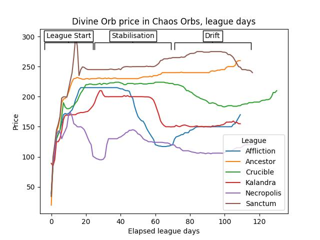
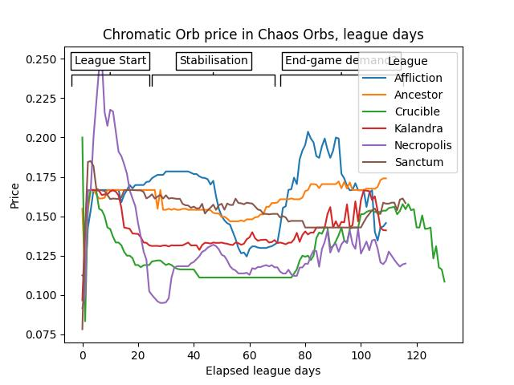
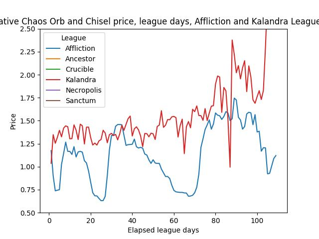

Path of Exile - a Perfectly Competitive Market? - A Supplement
February 2025
In the parent article, we discussed to what extent Path of Exile 1's player currency markets modelled a perfectly competitive free market. To summarise: quite well. For all the details, go read that first. In this supplement, we'll take a brief look at two other aspects of the currency markets - pricing variation over the league, and arbitrage.
For the .ipynb notebook that has all the code used to retrieve the data and make the visualisations, head over to my github repo here.
Section 0: Data
The start of any analysis project, however brief, is getting the data. Fortunately for us, the (actual) wizards over a poe.ninja have done all of that for us. They produce daily records of the price of almost all items, record the history, and make it available in data dumps. They do have an API, but it doesn't allow access to the historical data, so it's also availabe in my github repo linked above.
The notebook above has all the data retrieval and manipulation code in it.
We are going to limit our analysis to a few of the most common currency items - Divine Orbs, Chaos Orbs, Chromatic Orbs and Cartographer's Chisels. The notebook does retrieve more items than these, but they're not (yet?) used below. Likewise, we'll limit ourselves only to the Affliction, Ancestor, Crucible, Kalandra, Necropolis and Sanctum leagues. These should be sufficient to get a good overview of cross-league behaviours, while keeping the amount of data under control.
Section 1: Price Effects over the league duration
Now that we've prepared our data a bit, let's see what sort of price, supply and demand mechanisms we can see at play in exchange rates between the different currency items during the league. Let's start by looking at the exchange rate of Chaos Orbs to Divine Orbs.
Divine Orbs Price Variation
What does this tell us?
- The market undergoes rapid changes for approxiamtely the first 20 days while players get established in the league. In this time players canny enough to buy a Divine Orb will see it rapidly appreciate over the next fortnight.
- After this period the prices generally stabilise, though the price at which it does so is variable. This will depend ion the exact mechanics of the league - for example, Necropolis had mechanics allowing for very efficient collection of Divine Orbs. This will have increased the relative supply and thus reduced the cost.
- After the initial stabilisation, prices generally shift slowly.
Despite these apparent phases, it's clear that there are league variations. For example, the price of Divine Orbs spikes then falls very quickly before stabilising, a behaviour unlike other leagues. Likewise, the price in the Affliction league falls dramatically despite the overall trend of price stabiltiy in days 40+. Let's see if the trends are replicated with another currency item - this time, the Chromatic Orb.
Chromatic Orb Price Variation
Chromatic Orbs are significantly more common than Chaos Orbs in Path of Exile, and the relative price reflects that. Whereas a Divine Orb was worth 250 Chaos Orbs in some leagues, a Chromatic Orb is generally worth around and eighth of a Chaos Orb. 
- Like the Chaos/Divine conversion rate, Chaos/Chromatic exhibits rapid change very early in the league, and a period of stability afterwards.
- However, after around 80 days in we can observe spiky unpredictability in the rate - in Affliction league it climbs to higher than its starting price, for example, before spiking around and falling rapidly again.
- Chromatic Orbs tend to be used in bulk when players have reached end-game content (mapping) much more so than in the early and middle game. It is possible the rises in price later in the league reflects more players reaching end-game content and increasing the demand.
We can clearly see that prices in Path of Exile's currency markets fluctuate. Unfortunately, we can't see other useful facts like number of transactions, or the individual prices they were made at, or any other data points that could help us understand if these changes were driven by changes in supply or demand.
Section 2: Arbitrage
Arbitrage is a market practise whereby one can buy and sell different goods or commodities across different markets, in order to take advantage of differing prices across those markets. In the real world, this is often the case with forex markets, where differing prices mean I can buy a currency in one market and sell it back to my original currency in another market, resulting in me having the more of the currency I started with at miimal (or no) risk. In real world markets, arbitrage is either illegal, or exploited very quickly by actors, pushing the price down to a point where arbitrage is not possible.
Let's see if we can find any arbitrage opportunities in PoE"
As mentioned in the parent article, there is only one market in each PoE league, so our actors cannot try to exercise arbitrage between markets as in our example. However, we do still have multiple floating currency item prices within the same market, so if actors can buy a currency item and see it back at a profit (potentially via a third currency) then arbitrage is still possible.
In general, we should expect the price of currency A in currency B multiplied by the price of currency B in A to equal 1. Where that's not the case, there's scope for arbitrage.
Let's start with Divine Orbs and Chaos Orbs. This is one of the most demanded currency pairs after all, and usually a highly valuable one.
We can calculate the product of the two prices on a given league day. If the market is working effectively it should be close or equal to 1.
Let's look at another pair - Cartographer's Chisels and Chaos Orbs.
The notebook linked at the top produces this table row (trimmed to remove some unnecessary columns:
| League | Date | Get | Pay | Value_x (Chaos Orbs per Chisel) | Value_y (Chisels per Chaos Orbs) | Relative Price |
| Affliction | 2023-12-10 | Cartographer's Chisel | Chaos Orb | 0.1 | 9.0 | 0.9 |
This below is a good example of an opportunity for arbitrage. If I start with one Chaos Orb, I can trade it for 10 Chisels (each chisel is worth 0.1 Chaos Orbs, in the Value_x column). Then, with my 10 chisels, I can spend 9 of them to buy a Chaos Orb (each Chaos Orb is worth 9 chisels, in the Value_y column). Having completed my trade, I now have 1 Chaos Orb and 1 Chisel, and undertook no risk to do so.
That the Relative Price column is less than one indicates that I can arbitrage on Chaos Orbs through Chisels; if it were greater than one the converse would be true.
Let's have a look at this relationship graphically. We'll focus in on just the Afflication and Kalandra leagues. (A graph with all the leagues is in the notebook).  What can we see here?
- The Affliction League price is quite unpredictable, and cycles between arbitrage being available from Chaos Orbs to Chisels (<1) and the other way round (>1).
- The Kalandra league relative price is similarly unstable, but remains constantly high and rises throughout the league. While I cannot find a game mechanic that accounts for it, presumable this indicates that demand for Chisels was high enough throughout the league that the price could never equalise, or that players would not buy Chaos Orbs for Chisels consistently enough to prevent the price from rising.